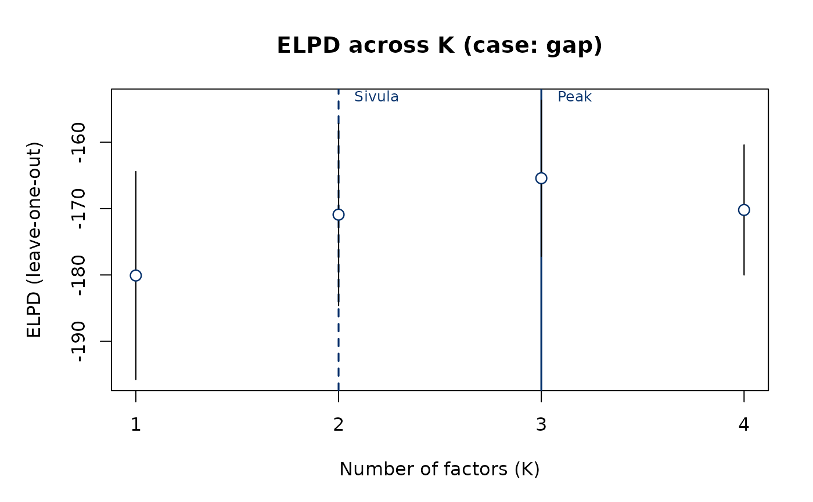

Returns a bayesqm_run object carrying a plausible ELPD trajectory
across K = 1..K_max, with user-chosen peak K, Sivula K, and case
label. Use it to demonstrate run_bayes() output and
plot_elpd() without a Stan backend; it is not a substitute for
run_bayes() on real data.
Usage
demo_run(
K_max = 4L,
k_peak = 3L,
k_sivula = 2L,
case = c("gap", "agree", "reversed"),
seed = 1L
)Examples
run <- demo_run()
run
#> Bayesian Q-methodology: multi-K comparison
#> K range: 1..4
#> ELPD peak: K = 3 (automated adoption)
#> Sivula rule: K = 2 (parsimony diagnostic)
#> Case: gap (ELPD peak > Sivula (weak discrimination between adjacent models))
#>
#> LOO comparison:
#> K elpd se delta_elpd se_delta ratio
#> 1 -180.09 8.00
#> 2 -170.91 7.00 -9.18 3.00 3.06
#> 3 -165.42 6.00 -5.49 3.00 1.83
#> 4 -170.20 5.00 4.78 3.00 1.59
#>
#> Case 'gap': k_peak is adopted; Sivula is reported as a parsimony diagnostic only.
plot_elpd(run)
